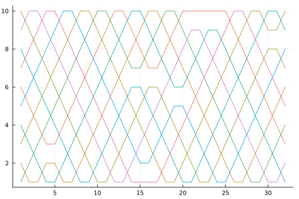

Pigeons
Facing a challenging integration problem? Tired of waiting for hours or days for your high-dimensional, multimodal Bayesian posterior approximation? Summing over your combinatorial space is taking months?
Try Pigeons: a Julia package to efficiently approximate posterior distributions, and more broadly, Lebesgue integration problems.
Pigeons' core algorithm is a distributed and parallel implementation of the following algorithms:
- Non-Reversible Parallel Tempering (NRPT), Syed et al., 2021.
- Variational PT, Surjanovic et al., 2022.
These algorithms achieve state-of-the-art performance for approximation of challenging probability distributions.
Pigeons can be used in a multi-threaded context, and/or distributed over hundreds or thousands of MPI-communicating machines.
Scope
We describe here the class of problems that can be approached using Pigeons.
Let $\pi(x)$ denote a probability density called the target. In many problems, e.g. in Bayesian statistics, the density $\pi$ is typically known only up to a normalization constant,
\[\pi(x) = \frac{\gamma(x)}{Z},\]
where $\gamma$ can be evaluated pointwise, but $Z$ is unknown. Pigeons takes as input the function $\gamma$.
Since we work in log-scale, we use the terminology log_potential as a shorthand for the unnormalized log density $\log \gamma(x)$. See informal interface log_potential.
Pigeons' outputs can be used for two tasks:
- Approximating expecations of the form $E[f(X)]$, where $X \sim \pi$. For example, the choice $f(x) = x$ computes the mean, and $f(x) = I[x \in A]$ computes the probability of $A$ under $\pi$.
- Approximating the value of the normalization constant $Z$. For example, in Bayesian statistics, this corresponds to the marginal likelihood.
Pigeons shines in the following scenarios:
- When the posterior density $\pi$ is challenging due to non-convexity and/or concentration on a sub-manifolds due to unidentifiability.
- When the user needs not only $E[f(X)]$ but also $Z$. Many existing MCMC tools focus on the former and struggle to do the latter in high dimensional problems.
- When the posterior density $\pi$ is defined over a non-standard state-space, e.g. a combinatorial object such as a phylogenetic tree.
Installing Pigeons
- If you have not done so, install Julia. So far, we have tested the code on Julia 1.8.x.
- Install
Pigeonsusing
using Pkg; Pkg.add("Pigeons")Running PT
Specify the target distribution and, optionally, parameters like random seed, etc by creating an Inputs:
using Pigeons
inputs = Inputs(target = toy_mvn_target(100))Inputs{Pigeons.ScaledPrecisionNormalPath, NoVarReference, Nothing}(Pigeons.ScaledPrecisionNormalPath(1.0, 10.0, 100), 1, 10, 10, 0, NoVarReference(), false, Function[Pigeons.log_sum_ratio, Pigeons.timing_extrema, Pigeons.allocation_extrema], 0, false, nothing, true, :samples)See Inputs for more options.
Then, run PT (locally on one process) using the function pigeons():
pt = pigeons(inputs);────────────────────────────────────────────────────────────────────────────
#scans Λ time(s) allc(B) log(Z) min(α) mean(α)
────────── ────────── ────────── ────────── ────────── ────────── ──────────
2 7.5 0.000129 1.28e+04 -122 2.66e-15 0.167
4 5.59 0.000149 1.47e+04 -119 2.6e-07 0.378
8 6.04 0.000183 1.86e+04 -115 0.00129 0.329
16 7.27 0.000289 2.42e+04 -118 0.0134 0.193
32 6.97 0.000428 3.05e+04 -114 0.107 0.225
64 7.03 0.000692 4.13e+04 -117 0.0531 0.219
128 7.23 0.00138 6.08e+04 -114 0.0944 0.196
256 7.05 0.00231 6.77e+04 -115 0.13 0.217
512 7.14 0.00427 7.18e+04 -115 0.171 0.207
1.02e+03 7.19 0.00827 7.91e+04 -115 0.172 0.201
────────────────────────────────────────────────────────────────────────────This runs PT on a 100-dimensional MVN toy example with 10 chains for $2047 = 2^{11} - 1$ iterations, and returns a PT struct containing the results of this run (more later on how to access information inside a PT struct). Each line in the output provides information on a round, where the number of iteration per round doubles at each round and adaptation is performed between rounds.
Since the above two julia lines are the most common operations in this package, creating inputs and running PT can be done in one line as follows:
pt = pigeons(target = toy_mvn_target(100));────────────────────────────────────────────────────────────────────────────
#scans Λ time(s) allc(B) log(Z) min(α) mean(α)
────────── ────────── ────────── ────────── ────────── ────────── ──────────
2 7.5 9.67e-05 1.28e+04 -122 2.66e-15 0.167
4 5.59 0.000116 1.47e+04 -119 2.6e-07 0.378
8 6.04 0.000159 1.86e+04 -115 0.00129 0.329
16 7.27 0.000222 2.42e+04 -118 0.0134 0.193
32 6.97 0.0007 3.05e+04 -114 0.107 0.225
64 7.03 0.000743 4.13e+04 -117 0.0531 0.219
128 7.23 0.00128 6.08e+04 -114 0.0944 0.196
256 7.05 0.00238 6.77e+04 -115 0.13 0.217
512 7.14 0.00425 7.18e+04 -115 0.171 0.207
1.02e+03 7.19 0.00812 7.91e+04 -115 0.172 0.201
────────────────────────────────────────────────────────────────────────────where the args... passed to pigeons are forwarded to Inputs.
Estimating the log normalization constant
To estimate the log normalization constant, use stepping_stone_pair(), for example:
stepping_stone_pair(pt)(-115.94888041658844, -114.87387825759738)we can see that this is close to the close-form expression available for this toy example:
Pigeons.analytic_lognormalization(toy_mvn_target(100))-115.12925464970229Accessing the output of PT
The PT struct returned by pigeons contains a field called reduced_recorders, which is just a NamedTuple containing recorder's which can be used to collect arbitary statistics computed along the execution of PT.
By default, the statistics collected use constant-memory summaries (i.e. constant in the number of iteration, leveraging the package OnlineStats.jl), however it is possible to customize which statistics to collect. We provide three examples below.
As a first example, we show how to store all the samples in the reference chain in memory, using the traces recorder. We specify which recorder to use via the recorder_builders argument:
p = pigeons(
target = toy_mvn_target(100),
recorder_builders = [traces]);──────────────────────────────────────────────────────
#scans Λ log(Z) min(α) mean(α)
────────── ────────── ────────── ────────── ──────────
2 7.5 -122 2.66e-15 0.167
4 5.59 -119 2.6e-07 0.378
8 6.04 -115 0.00129 0.329
16 7.27 -118 0.0134 0.193
32 6.97 -114 0.107 0.225
64 7.03 -117 0.0531 0.219
128 7.23 -114 0.0944 0.196
256 7.05 -115 0.13 0.217
512 7.14 -115 0.171 0.207
1.02e+03 7.19 -115 0.172 0.201
──────────────────────────────────────────────────────Then we can access the sample at chain 10 (the reference) at iteration say 42 using:
example_sample = get_sample(p, 10, 42)
size(example_sample)(100,)Note that the traces recorder only stores data for reference chain(s).
As a second example, we show next how to store samples to disk:
# save both to disk and to memory
pt = pigeons(target = toy_mvn_target(10), recorder_builders = [traces, disk], checkpoint = true)
# example of how to post-process the samples from disk
# this loads the samples one at the time so can be useful if the
# full trace would not fit in memory
# By default, only the samples from the last rounds are loaded
# i.e. a burn-in of 50%.
process_samples(pt) do chain, scan, sample
# check the results are identical for the disk and traces recorders
@assert sample == get_sample(pt, chain, scan)
end──────────────────────────────────────────────────────
#scans Λ log(Z) min(α) mean(α)
────────── ────────── ────────── ────────── ──────────
2 1.54 -12.5 0.00786 0.829
4 1.9 -12.9 0.0483 0.789
8 3.22 -12 0.218 0.642
16 2.93 -11.1 0.477 0.675
32 3.05 -11.7 0.343 0.661
64 2.67 -11.3 0.605 0.703
128 2.92 -11.5 0.572 0.676
256 2.71 -11.7 0.618 0.699
512 2.83 -11.7 0.629 0.686
1.02e+03 2.81 -11.5 0.645 0.688
──────────────────────────────────────────────────────As a third example, we show here how to plot the index process, a useful diagnostic to assess the efficiency of PT algorithms (Syed et al., 2021).
Again we use the argument recorder_builders to specify that we wish to collect the full index process:
p = pigeons(
target = toy_mvn_target(1),
recorder_builders = [index_process],
n_rounds = 5);──────────────────────────────────────────────────────
#scans Λ log(Z) min(α) mean(α)
────────── ────────── ────────── ────────── ──────────
2 0.417 -1.56 0.782 0.954
4 0.564 -0.653 0.61 0.937
8 0.597 -0.833 0.869 0.934
16 0.686 -1.35 0.729 0.924
32 0.818 -1.19 0.8 0.909
──────────────────────────────────────────────────────Then we can access the information via:
p.reduced_recorders.index_process
using Plots
plot(p.reduced_recorders.index_process);
savefig("index_process_plot.svg");qt.qpa.xcb: could not connect to display
qt.qpa.plugin: Could not load the Qt platform plugin "xcb" in "" even though it was found.
This application failed to start because no Qt platform plugin could be initialized. Reinstalling the application may fix this problem.
Available platform plugins are: linuxfb, minimal, offscreen, vnc, xcb.
Aborted (core dumped)
connect: Connection refused
GKS: can't connect to GKS socket application
GKS: Open failed in routine OPEN_WS
GKS: GKS not in proper state. GKS must be either in the state WSOP or WSAC in routine ACTIVATE_WS
Other statistics follow the same general usage, see Parallel Tempering (PT) for more details.
Loading and resuming a checkpoint
Pigeons can write a "checkpoint" periodically to ensure that not more than half of the work is lost in the event of e.g. a server failure. This is enabled as follows:
pt = pigeons(target = toy_mvn_target(100), checkpoint = true)PT("/home/runner/work/Pigeons.jl/Pigeons.jl/docs/build/results/all/2023-05-25-03-41-54-vBIaBySB")See write_checkpoint() for details of how this is accomplished in a way compatible to both the single-machine and MPI contexts. Each checkpoint is located in results/all/[unique folder]/round=[x]/checkpoint, with the latest run in results/latest/[unique folder]/round=[x]/checkpoint.
Checkpoints are also useful when an MPI-distributed PT has been ran, and the user wants to load the full set of results in one interactive session.
To load a checkpoint, create a PT struct by passing in the path string to the checkpoint folder, for example to re-load the latest checkpoint from the latest run:
pt_from_checkpoint = PT("results/latest")PT("/home/runner/work/Pigeons.jl/Pigeons.jl/docs/build/results/all/2023-05-25-03-41-54-IuJLK0r8")Automatic correctness checks
It is notoriously difficult to implement correct parallel/distributed algorithms. One strategy we use to address this is to guarantee that the code will output precisely the same output no matter how many threads/machines are used. We describe how this is done under the hood in the page Distributed PT.
In practice, how is this useful? Let us say you developed a new target and you would like to make sure that it works correctly in a multi-threaded environment. To do so, add a flag to indicate to "check" one of the PT rounds as follows, and enable checkpointing
pigeons(target = toy_mvn_target(100), checked_round = 3, checkpoint = true)PT("/home/runner/work/Pigeons.jl/Pigeons.jl/docs/build/results/all/2023-05-25-03-41-54-e8UvEBSp")The above line does the following: the PT algorithm will pause at the end of round 3, spawn a separate process with only one thread in it, run 3 rounds of PT with the same Inputs object in it, and verify that the checkpoints of the single-threaded run is identical to the one that ran in the main process. If not, an error will be raised with some information on where the discrepancy comes from. Try to pick the checked round to be small enough that it does not dominate the running time (since it runs in single-threaded, single-process mode), but big enough to achieve the same code coverage as the full algorithm. Setting it to zero (or omitting the argument), disable this functionality.
Did the code above actually used many threads? This depends on the value of Threads.nthreads(). Julia currently does not allow you to change this value at runtime, so for convenience we provide the following way to run the job in a child process with a set number of Julia threads:
pt_result = pigeons(target = toy_mvn_target(100), multithreaded = true, checked_round = 3, checkpoint = true, on = ChildProcess(n_threads = 4))Result{PT}("/home/runner/work/Pigeons.jl/Pigeons.jl/docs/build/results/all/2023-05-25-03-45-50-KIHVvaqN")Notice that we also add the flag multithreaded = true.
Notice that this time, instead of returning a PT struct, this time we obtain a Result, which only holds the path where the checkpoints can be found. If you would like to load a result in memory, use:
pt = load(pt_result)PT("/home/runner/work/Pigeons.jl/Pigeons.jl/docs/build/results/all/2023-05-25-03-46-41-a6F8vLS6")In this case, since the model is built-in, the check passed successfully as expected. But what if you had a third-party target distribution that is not multi-threaded friendly? I.e. it may write in global variables or other non-thread safe construct. Then you can probably still use your thread-naive target over MPI processes. For example, if the thread-unsafety comes from the use of global variables, then each process will have its own copy of the global variables.
We described how MPI can be used in the next two sections.
Running MPI locally
To run MPI locally on one machine, using 4 MPI processes and 1 thread per process use:
pigeons(
target = toy_mvn_target(100),
checked_round = 3,
checkpoint = true,
on = ChildProcess(
n_local_mpi_processes = 4,
n_threads = 1))Result{PT}("/home/runner/work/Pigeons.jl/Pigeons.jl/docs/build/results/all/2023-05-25-03-46-41-d7uSbKcX")Note that if n_local_mpi_processes exceeds the number of cores, performance will steeply degrade (in contrast to threads, for which performance degrades much more gracefully when the number of threads exceeds the number of cores).
Running MPI on a cluster
If the dimensionality of the state space is large, you may worry that the time to transmit states over the network would dominate the running time. Remarkably, the size of the messages transmitted in the inner loop of our algorithm does not depend on the state space. In a nutshell, the machines only need to transmit the value of log density ratios (a single float). See Algorithm 5 in Syed et al., 2021 for details.
MPI is typically available via a cluster scheduling system. At the time of writing, PBS and SLURM are supported, and an experimental implementation of LSF is included. Create an issue if you would like another submission system included.
Follow these instructions to run MPI over several machines:
- In the cluster login node, follow the installation instruction as above.
- Start Julia in the login node, and perform a one-time setup by calling
setup_mpi(). - Still in the Julia REPL running in the login node, use:
mpi_run = pigeons(
target = toy_mvn_target(1000000),
n_chains = 1000,
on = MPI(
n_mpi_processes = 1000,
n_threads = 1))This will start a distributed PT algorithm with 1000 chains on 1000 MPI processes, each using one thread, targeting a one million dimensional target distribution. On the UBC Sockeye cluster, the last round of this run (i.e. the last 1024 iterations) takes 10 seconds to complete, versus more than 2 hours if ran serially, i.e. a >700x speed-up. This is reasonably close to the theoretical 1000x speedup, i.e. we see that the communication costs are negligible.
You can "watch" the progress of your job (queue status and standard output once it is available), using:
watch(mpi_run)and cancel/kill a job using
kill_job(mpi_run)Specification of general models
The most general way to invoke Pigeons is by specifying two ingredients: a sequence of distributions, $\pi_1, \pi_2, \dots, \pi_N$, and for each $\pi_i$, a $\pi_i$-invariant Markov transition kernel.
See examples/general-target.jl for an example of how to input an arbitrary Julia function as the target distribution.
Typically, $\pi_1$ is a distribution from which we can sample i.i.d. (e.g. the prior, or a variational approximation), while the last distribution coincides with the distribution of interest, $\pi_N = \pi$, the target. We use an informal interface called target to orchestrate the creation of the ingredients needed by parallel tempering algorithms. The main pieces to specify are create_state_initializer(), to provide initial states, default_explorer, to construct explorer's which are $\pi_i$-invariant Markov transition kernel, and finally, create_reference_log_potential(), to construct $\pi_1$.
A range of other extension points are defined, to control the tempering, interpolating path's, adaptation, but those all have reasonable default implementations built-in. See the Parallel Tempering (PT) page for more information.
Targeting a Turing.jl model
To demonstrate how to integrate a third-party target distribution into Pigeons, we show in this section how to sample from target distributions defined using a Turing.jl model. This integration is currently experimental.
We consider an unidentifiable Beta-Binomial model for instructional purposes. Typically, MCMC samplers would have difficulty sampling from posterior distributions of unidentifiable models. However, Pigeons excels in this scenario compared to traditional samplers.
First, we define the Turing model.
using Turing
# *Unidentifiable* unconditioned coinflip model with `N` observations.
@model function coinflip_unidentifiable(; N::Int)
p1 ~ Uniform(0, 1) # prior on p1
p2 ~ Uniform(0, 1) # prior on p2
y ~ filldist(Bernoulli(p1*p2), N) # data-generating model
return y
end;
coinflip_unidentifiable(y::AbstractVector{<:Real}) = coinflip_unidentifiable(; N=length(y)) | (; y)
function flip_model_unidentifiable()
p_true = 0.5; # true probability of heads is 0.5
N = 100;
data = rand(Bernoulli(p_true), N); # generate N data points
return coinflip_unidentifiable(data)
endflip_model_unidentifiable (generic function with 1 method)Once we have defined our Turing model, it is straightforward to sample from the posterior distribution of p1 and p2 as follows:
using Pigeons
model = flip_model_unidentifiable()
pt = pigeons(target = TuringLogPotential(model));──────────────────────────────────────────────────────────────────────────────────────────────────
#scans Λ time(s) allc(B) log(Z) min(α) mean(α) min(αₑ) mean(αₑ)
────────── ────────── ────────── ────────── ────────── ────────── ────────── ────────── ──────────
2 1.36 0.586 4.17e+06 -73.9 0.000666 0.849 1 1
4 2.4 0.00646 1.63e+06 -72.4 0.331 0.733 1 1
8 1.13 0.0122 3.29e+06 -71.1 0.801 0.874 1 1
16 1.63 0.0245 6.45e+06 -71.3 0.704 0.819 1 1
32 1.68 0.0494 1.29e+07 -71.4 0.716 0.814 1 1
64 1.69 0.127 2.55e+07 -71.6 0.708 0.812 1 1
128 1.67 0.217 5.11e+07 -71.6 0.769 0.815 1 1
256 1.63 0.422 1.02e+08 -71.5 0.789 0.819 1 1
512 1.6 0.845 2.04e+08 -71.7 0.775 0.822 1 1
1.02e+03 1.59 1.81 4.1e+08 -71.6 0.801 0.823 1 1
──────────────────────────────────────────────────────────────────────────────────────────────────Targeting a non-Julian model
Suppose you have some code implementing vanilla MCMC, written in an arbitrary "foreign" language such as C++, Python, R, Java, etc. You would like to turn this vanilla MCMC code into a Parallel Tempering algorithm able to harness large numbers of cores, including distributing this algorithm over MPI. However, you do not wish to learn anything about MPI/multi-threading/Parallel Tempering.
Surprisingly, it is very simple to bridge such code with Pigeons. The only requirement on the "foreign" language is that it supports reading the standard in and writing to the standard out, hence virtually any languages can be interfaced in this fashion. Based on this minimalist "standard stream bridge" with worker processes running foreign code (one such process per replica; not necessarily running on the same machine), Pigeons will coordinate the execution of an adaptive non-reversible parallel tempering algorithm.
To see how to accomplish this, see StreamTarget. A concrete example is also shown in BlangTarget, which uses this infrastructure to run arbitrary code in the Blang modelling language over MPI.